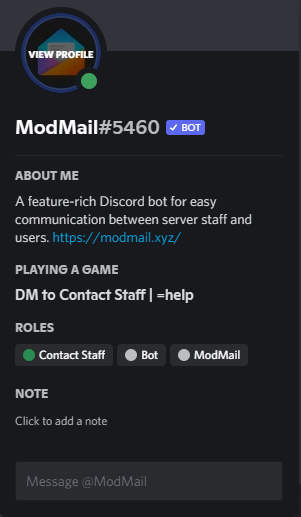

How to contact server staff?
If there is an isse that requires staff attention, please do not ping or direct message a staff member to report it as this is against server rules and may
result in a warn. Instead please use the ModMail bot with the method below to bring any issues to the mod team's attention.
The ModMail Bot:
To report any issues you can you the ModMail bot to open a ticket with server staff.
-
Send a message containing your issue to the bot


-
Select the Codecademy Community server by reacting with the appropriate number
(You may have to use the arrow reactions to scroll if you are in a large number of servers)
-
Sent!
Your message has now been sent to server staff.

If the ModMail bot is offline:
If the ModMail bot is offline and you need to report a serious violation of server rules, you can ping an online Admin or Moderator to bring our attention to the violation. However, please reserve this only for when the ModMail bot is down or if the violation requires immediate attention.